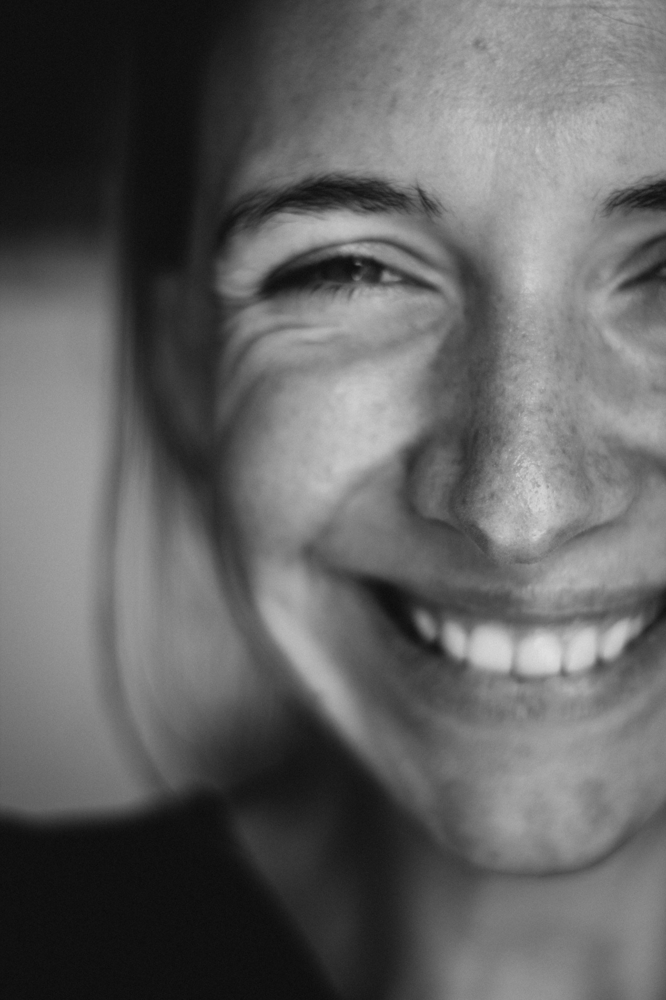
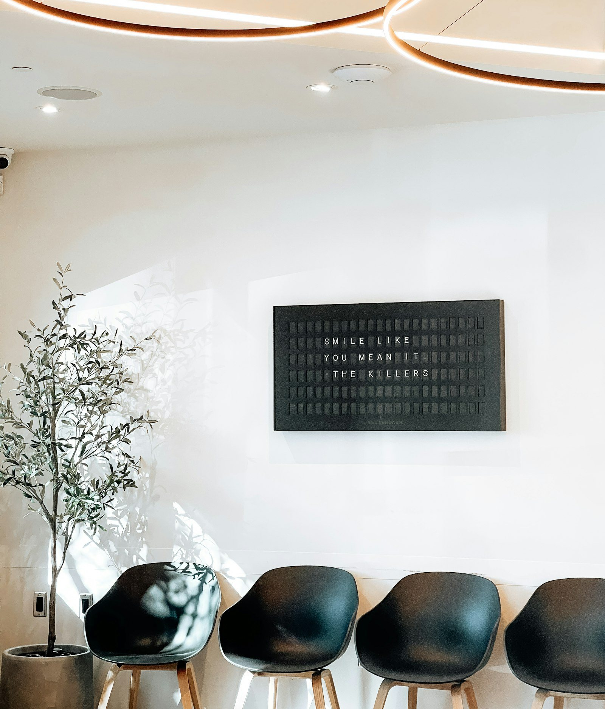
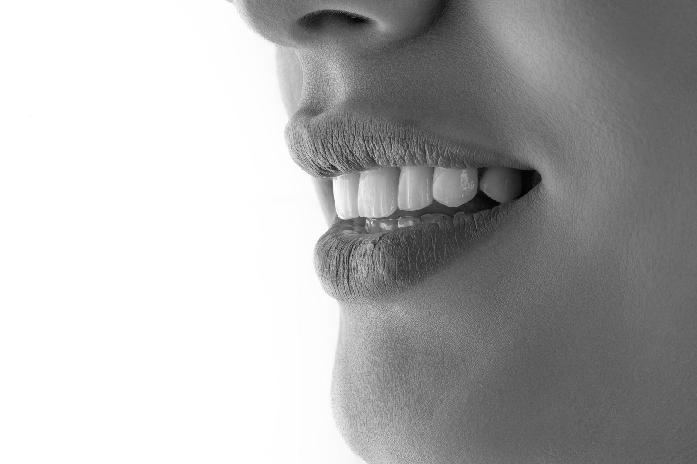
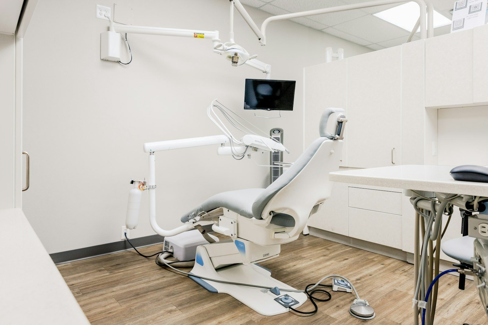
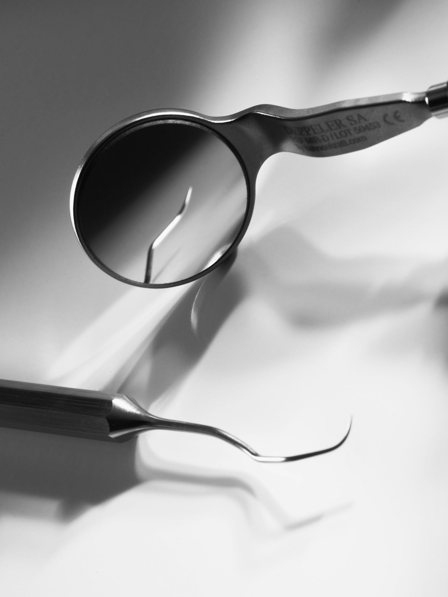
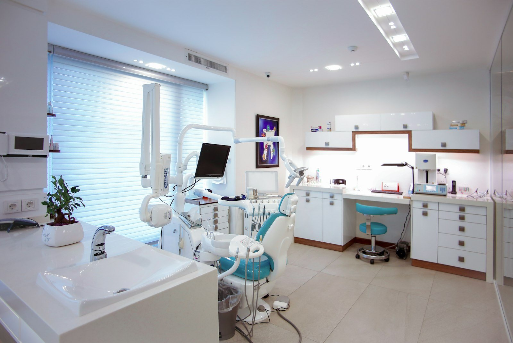
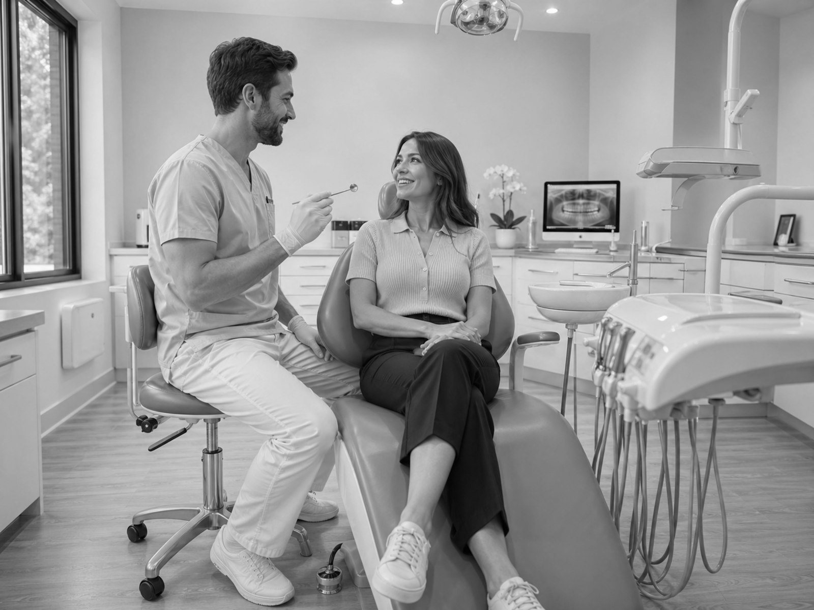

Lentes, facetas e clareamento planejados a partir do seu rosto, da sua fala e do seu jeito de sorrir. Sem padrão de catálogo.


A primeira consulta dura uma hora. Fotografamos, escaneamos e conversamos antes de falar em tratamento. Só depois mostramos, na tela, como o sorriso pode ficar.
Dr. Rafael Avelar · Responsável técnico · CRO-SP 00.000
Cada tratamento tem uma página própria, com indicação, etapas e cuidados.
Lâminas de porcelana muito finas, coladas sobre o dente com pouco ou nenhum desgaste. Corrigem cor, forma e pequenos espaços.
Página do tratamento
Alternativa feita em consultório, em uma ou duas sessões, para ajustes de forma e cor.
Página do tratamentoEm consultório, caseiro com moldeira ou combinado. Sempre depois de checar a saúde da gengiva.
Página do tratamentoAjuste do contorno da gengiva para equilibrar o sorriso que mostra gengiva demais.
Página do tratamentoPlacas transparentes trocadas a cada etapa, planejadas no computador do início ao fim.
Página do tratamento
O estúdio foi desenhado com uma única sala de atendimento. A agenda tem intervalos longos para que cada consulta comece na hora marcada.
Luz natural, cadeira voltada para a janela e uma tela onde você acompanha cada etapa do planejamento.



Respostas diretas para as dúvidas que ouvimos todos os dias no consultório.
O planejamento parte do formato do seu rosto e dos seus dentes. Antes da porcelana, você testa uma prova em boca e aprova o resultado.
Na maioria dos casos o desgaste é mínimo ou nenhum. A avaliação mostra o que se aplica a você.
Depende do caso. O plano entregue na primeira consulta traz o número de sessões e o prazo.
O atendimento é particular, com formas de pagamento combinadas no plano.
Responda algumas perguntas pelo WhatsApp e a equipe sugere o melhor horário para você.
Conversar pelo WhatsApp